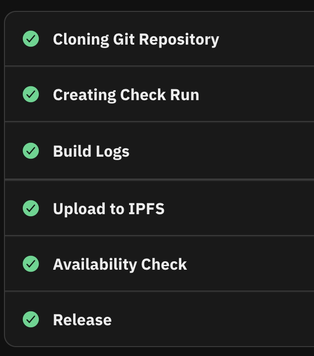

Dwebsite FAQ
Short questions and answers on content creation and publishing with the decentralized web.
- How was this dwebsite made?
-
Started with a design doc and a log to capture decisions and briefly document the general process.
Source content was intentionally written in OASIS Open DITA XML. Dweb YVR Chat is a React app running on its own node. markdown/pdf/html/video.
It is transformed to HTML5 using the the latest stable relese of the DITA Open Toolkit. Current version is DITA Open Toolkit 4.2.3 which is being used through Github Actions.
Python preps the HTML5 so it plays nicely with Bulma CSS.
Bulma CSS on a CDN provides responsive layout and UX
Fleek is the platform and application host and get the content onto the InterPlanetary File System (IPFS).
- Do I need to use Content Identifiers in my XML/Markdown/HTML?
- Nope. Don't even try. There's zero benefit AFAIC.
- What processes need to change if you want to publish content to IFPS?
-
Using Fleek as my platform provider, meant that I could simply auto-deploy from Git. When experimenting with the DWeb YVR chat app, I used the Fleek CLI. Having Fleek handle the entire IPFS layer is a happy path.
Figure 1. Fleek Deployment With legacy systems, there would need to be larger business incentives or regulations in order to get past the inertia that sets in once you're using enterprise solutions.
- How much do I need to think about security or encryption? Or is it auto-magical?
- Auto-magical HTTPS via Fleek.
- How do I deploy a dweb site?
- Select a platform provider or you can publish directly onto IPFS yourself.
- How do I make the references to graphics, should I be using CIDs rather than URLs?
- No, stick to meaningful and human-readable names.
- Search??
-
Search is a rabbit hole.
My search input uses InstantSearch.js for the GUI and using an Algolia cloud index.
Research notes: Elastic and Algolia indexed and searched the dweb site as expected, also considered Meili https://github.com/meilisearch/integration-guides?tab=readme-ov-file